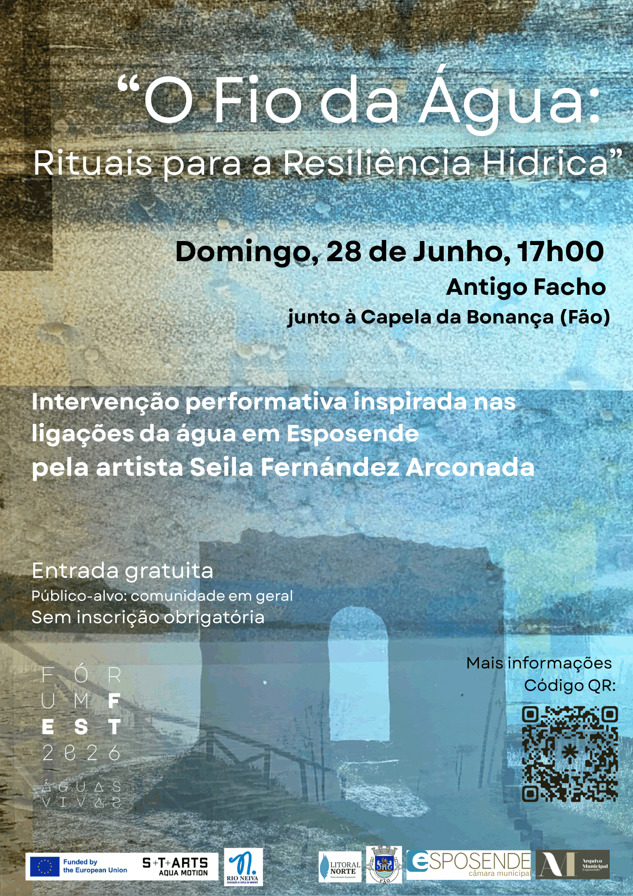

O Fio da Água:
Rituais para a
Resiliência Hídrica

Intervenção performativa inspirada nas ligações da água em Esposende, desde memórias de cheias até às formas contemporâneas de relação, adaptação e transformação dos ecossistemas hídricos em tempos de incerteza.
Este ritual contemporâneo propõe um espaço de imaginação e coexistência com a água, ativando o antigo farol da Bonança (Ofir) durante a lua cheia como elemento simbólico de luz, orientação e memória.
Um momento de encontro entre corpo, território e água, onde se cruzam memória, presença e futuro.
Esta intervenção faz parte do projeto "O Fio da Água: Abraçar o Fluxo da Água para Futuros Resilientes", parte integrante do Festival Águas Vivas, organizado pela Rio Neiva - Associação Defesa do Ambiente. Promovido por S+T+ARTS AQUA MOTION em colaboração com a Junta de Freguesia de Fão, Município de Esposende, Arquivo Municipal e o Parque Natural do Litoral Norte.
Loading...
Digitalize para experienciar a Intervenção
Esta experiência de Realidade Aumentada está disponível para
iPhone
e
Android.
Use a câmara do seu telemóvel para digitalizar o código QR
e iniciar a experiência de Realidade Aumentada.
"O Fio da Água: Abraçar o Fluxo da Água para Futuros Resilientes" explora as relações aquosas entre a comunidade local e o território, procurando transformar percepções das populações propensas a cheias sobre as incertezas da água numa coexistência imaginativa. Através de ações artísticas multissensoriais e "conversas sobre cheias", esta iniciativa de investigação e colaboração transdisciplinar visa revelar fluxos hídricos ocultos e inspirar novas atitudes coletivas para um futuro mais harmonioso e resiliente.
Liderado por Seila Fernández Arconada, artista e investigadora multidisciplinar espanhola radicada em Berlim especializada em crises socioecológicas, o projeto foi selecionado pelo programa europeu S+T+ARTS AQUA MOTION (Desafio #8 – Moving Waters). Esta iniciativa conta com o apoio da Comissão Europeia e está a ser desenvolvida em parceria com a Rio Neiva Associação.